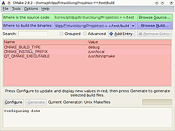

CMake
Dieser Artikel wurde für die folgenden Ubuntu-Versionen getestet:
Dieser Artikel ist größtenteils für alle Ubuntu-Versionen gültig.
Artikel für fortgeschrittene Anwender
Dieser Artikel erfordert mehr Erfahrung im Umgang mit Linux und ist daher nur für fortgeschrittene Benutzer gedacht.
Zum Verständnis dieses Artikels sind folgende Seiten hilfreich:
CMake  ist ein plattformübergreifendes Programmiertool. Es wird insbesondere als Build-System genutzt. Dieser Artikel führt in die einfache Benutzung von CMake mit bereits bestehenden Projekten ein und erklärt danach, wie man es für eigene Projekte verwenden kann.
ist ein plattformübergreifendes Programmiertool. Es wird insbesondere als Build-System genutzt. Dieser Artikel führt in die einfache Benutzung von CMake mit bereits bestehenden Projekten ein und erklärt danach, wie man es für eigene Projekte verwenden kann.
Installation¶
CMake besteht aus den folgenden Paketen (die Grafische Oberfläche ist dabei optional):.
cmake
cmake-qt-gui
 mit apturl
mit apturl
Paketliste zum Kopieren:
sudo apt-get install cmake cmake-qt-gui
sudo aptitude install cmake cmake-qt-gui
Benutzung¶
CMake erstellt je nach System angepasste makefiles oder Projekte (z.B. für Visual Studio) anhand der vom Entwickler in den Projektdateien vorgegebenen Informationen. Diese generierten Daten sollten nicht mehr vom Benutzer verändert werden. Einfluss auf den Prozess sollte ausschließlich über die Veränderung der entsprechenden CMAKE-Variablen geschehen. Anfangs gibt es nur wenige Variablen, die auch sinnvoll vom Benutzer verändert werden können, spätestens beim Cross-Compilen werden es dann deutlich mehr.
Grundlagen¶
cmake [-optionen] PFAD/ZU/QUELLDATEIEN
CMake favorisiert bei der Kompilation sogenannte "Out of source"-Builds. Das bedeutet, dass das Programm in einem eigenen Verzeichnis gebaut wird. Meist wird dafür im Wurzelverzeichnis eines Projekts das Verzeichnis build angelegt, es kann jedoch auch ein beliebiger anderer Ort im Dateisystem benutzt werden. CMake akzeptiert dabei sowohl relative als auch absolute Pfadangaben, um zu diesem Verzeichnis zu gelangen.
Wird das Verzeichnis build im Projektverzeichnis benutzt, lautet der CMake-Aufruf aus diesem Verzeichnis heraus einfach nur
cmake ..
Bei einem Build in einem anderen Verzeichnis und absoluten Pfandangaben
cmake /HIER/IST/DER/QUELLCODE
Hinweis:
cmake funktioniert nur, wenn das Zielverzeichnis eine CMakeLists.txt-Datei enthält. Normalerweise findet man diese im Wurzelverzeichnis des Projekts. Falls nicht, sollte man in der Dokumentation des Projekts nachsehen, ob es bei diesem Projekt etwas Spezielles zu beachten gibt.
Optionen einstellen¶
CMake kann sehr vielseitig eingestellt werden. Dies kann entweder über die Kommandozeile, die grafische Oberfläche oder über direktes Manipulieren der CMakeCache.txt (nicht empfohlen) erfolgen.
Kommandozeile¶
Auf der Kommandozeile können verschiedene Optionen mithilfe eines vorangesetzten -D gesetzt werden:
cmake -DCMAKE_BUILD_TYPE=Debug ..
Damit wird die entsprechende Option in den Konfigurationsspeicher geschrieben.
Grafische Oberfläche¶
Die grafische Oberfläche findet man im Programm-Menü oder über den Programmnamen cmake-gui. Die Oberfläche ist eigentlich selbsterklärend, da sie aber nur in Englisch vorliegt hier trotzdem die wichtigsten Einstellungen.

Im grünen Bereich wird der Pfad zum Quellcode angegeben. Der blaue Bereich zeigt auf das Build-Verzeichnis. Wie weiter oben erwähnt, ist dies normalerweise unter dem Namen build im Quellcodeverzeichnis zu finden. Der rote Bereich zeigt schließlich wichtige Einstellungen an, die vom Nutzer verändert werden können. Hier wurde zum Beispiel als Build-Type "Debug" gewählt. Weitere Werte kann man über den Knopf "Add Entry" hinzufügen. Wird bei "Advanced" ein Haken gesetzt, werden auch erweiterte Optionen angezeigt. Dies ist für Anfänger aber nicht zu empfehlen, da diese Optionen am Anfang sehr verwirrend sein können.
Bei einem  -Klick auf "Configure" wird cmake konfiguriert, also die entsprechenden Variablen angewandt und in der CMakeCache.txt gespeichert. Bei einem -Klick auf "Generate" werden dann die eigentlichen für den Build-Prozess nötigen Dateien generiert (z.B. makefiles).
-Klick auf "Configure" wird cmake konfiguriert, also die entsprechenden Variablen angewandt und in der CMakeCache.txt gespeichert. Bei einem -Klick auf "Generate" werden dann die eigentlichen für den Build-Prozess nötigen Dateien generiert (z.B. makefiles).
CMakeCache.txt¶
Diese Datei speichert alle Konfigurationsoptionen, die vom Benutzer und vom Projekt angelegt wurden. Sie liegt immer im build-Verzeichnis und speichert bereits eingestellte Variablen. Diese werden bei einem erneuten Aufruf von CMake übernommen. Die Einträge in der Datei sind alle auf Englisch kommentiert. Die nachträgliche Änderung von Variablen ist zwar möglich, jedoch nicht empfohlen, da die Datei z.B. bei einem erneuern des Caches überschrieben wird. Stattdessen sollten diese auf der Kommandozeile oder in der GUI gesetzt werden.
1 2 3 4 5 6 7 8 9 10 11 12 13 14 15 16 17 18 19 20 21 22 23 24 25 26 27 28 29 30 31 32 33 34 | # This is the CMakeCache file. # For build in directory: /home/user/Pfad/zu/Projekt # It was generated by CMake: /usr/bin/cmake # You can edit this file to change values found and used by cmake. # If you do not want to change any of the values, simply exit the editor. # If you do want to change a value, simply edit, save, and exit the editor. # The syntax for the file is as follows: # KEY:TYPE=VALUE # KEY is the name of a variable in the cache. # TYPE is a hint to GUI's for the type of VALUE, DO NOT EDIT TYPE!. # VALUE is the current value for the KEY. ######################## # EXTERNAL cache entries ######################## //Value Computed by CMake Projektname_BINARY_DIR:STATIC=/home/user/Pfad/zu/Projekt/build //Value Computed by CMake Projektname_SOURCE_DIR:STATIC=/home/user/Pfad/zu/Projekt/ //Choose the type of build, options are: None(CMAKE_CXX_FLAGS or // CMAKE_C_FLAGS used) Debug Release RelWithDebInfo MinSizeRel. CMAKE_BUILD_TYPE:STRING=Debug //Enable/Disable color output during build. CMAKE_COLOR_MAKEFILE:BOOL=ON //CXX compiler. CMAKE_CXX_COMPILER:FILEPATH=/usr/bin/c++ //Weitere Werte //... |
Wie aus dem Erklärungstext ersichtlich, kann man die Optionen beliebig verändern. Was wichtige Variablen bedeuten und welche Werte man dabei vergeben darf, wird im folgenden Abschnitt erklärt. Werte, die im Kommentar Value Computed by CMake stehen haben, sollte man aber nicht verändern. Im Allgemeinen gilt: Wird der entsprechende Wert nicht in cmake-gui angezeigt, sollte man ihn auch nicht von Hand verändern, es sei denn, man weiß was man tut.
Liste wichtiger Optionen¶
Die meisten Optionen, insbesondere Einstellungen zum Compiler, findet CMake automatisch. Trotzdem gibt es einige wichtige Optionen, die man kennen sollte.
| Wichtige Optionen | ||
| Variable | Mögliche Werte | Erklärung |
CMAKE_BUILD_TYPE | None Debug Release RelWithDebInfo MinSizeRel | Stellt ein, wie das Programm gebaut werden soll. Handelt es sich um ein eigenes Projekt, an dem man noch arbeitet, sollte man Debug nehmen; für Beta-Versionen, die man testet, sollte man RelWithDebInfo nehmen, für fertige Programme reicht meist Release. |
CMAKE_INSTALL_PREFIX | Pfadangabe | Wird benötigt, wenn das Projekt installiert werden soll. Standard ist meist /usr oder /usr/local. Es kann aber auch ein beliebiger anderer Pfad angegeben werden, z.B. wenn man in seinem Home-Verzeichnis installieren will. |
CMAKE_TOOLCHAIN_FILE | Pfadangabe | Liest eine Datei mit CMake-Einstellungen ein, die dem aktuellen Projekt hinzugefügt werden. Diese Datei kann nicht nur Variablen sondern auch skriptgesteuerte Abläufe enthalten. Wird beispielsweise beim Cross-Compiling benötigt. |
Erstellung eines Projekts¶
CMake basiert auf einer oder mehreren Textdateien, in denen das Projekt definiert wird. Die Basisdatei liegt immer im Wurzelverzeichnis eines Projektes, weitere Dateien können in Unterverzeichnissen liegen. Die Dateien heißen dabei immer CMakeLists.txt.
Hinweis:
Für den folgenden Teil sollte man grundlegende Programmierkenntnisse besitzen, sowie wissen, was beim Kompilieren passiert und was es bedeutet, Programme zu linken.
Beispielstruktur¶
Auf der folgenden Beispielstruktur aufbauend wird ein CMake-Projekt erstellt, das eine Bibliothek und ein ausführbares Programm enthält, sowie eine Bilddatei in ein Verzeichnis kopiert.
+ CMakeLists.txt +-\ src | + main.cpp | + CMakeLists.txt +-\ lib | + library.h | + library.cpp | + CMakeLists.txt +-\ img | + icon.png
Im Folgenden kommentierte CMakeLists.txt-Dateien.
Die CMake-Dateien¶
Wurzelverzeichnis
1 2 3 4 5 6 7 8 9 10 11 12 13 14 15 16 | # Der Projektname project(beispiel) # Minimal benötigte CMake-Version wenn z.B. bestimmte CMake-Kommandos benutzt werden cmake_minimum_required(VERSION 2.6) # Benötigte oder optionale Pakete. Hier können z.B. Qt4 oder Boost stehen find_package(SomePackage REQUIRED) find_package(OtherPackage OPTIONAL) # CMake soll auch in diesen Verzeichnissen weitersuchen add_subdirectory(lib) add_subdirectory(src) # Es sollen auch einige Dateien installiert werden, z.B. Bilder oder Übersetzungen install(FILES img/icon.png DESTINATION img) |
Wie man sieht, wird hier zuerst der Projektname definiert. Danach gibt man benötigte oder optionale Abhängigkeiten an. CMake bringt für alle wichtigen Programme entsprechende FindXxx.cmake-Dateien mit. Diese liegen unter /usr/share/cmake-X.X/Modules. Falls man sehr exotische Bibliotheken benötigt, kann es aber vorkommen, dass diese nicht existieren. Mehr Informationen zu diesem Thema bietet das CMake Wiki .
Nach den Abhängigkeiten werden zwei Unterordner eingebunden. In diesen müssen jeweils eigene CMakeLists.txt-Dateien liegen, welche die in diesen Unterordnern liegenden Programme oder Bibliotheken bauen. CMake löst dabei Abhängigkeiten selbst auf, allerdings sollten der Übersichtlichkeit und Verständlichkeit zuliebe die Ordner, die Abhängigkeiten für andere Teile des Programms beinhalten, auch hier zuerst genannt werden.
Mit dem Kommando in der letzten Zeile wird CMake angewiesen, die Dateien, die nicht automatisch gebaut werden, ebenfalls zu installieren. Installiert werden Dateien immer nach ${CMAKE_INSTALL_PREFIX}, hier also in den Unterordner img. Die Definition für die Installation der in den Ordnern lib und src gebauten Programmteile erfolgt übrigens in den entsprechenden Dateien in den Unterordnern.
Verzeichnis lib
1 2 3 4 5 6 7 8 9 10 11 12 13 14 15 16 17 18 19 20 21 22 23 | # Wenn diese Bibliothek zusätzliche includes benötigt, müssen diese # natürlich eingefügt werden. # Hier wird definiert, welche Quellcodedateien zur Bibliothek dazugehören. # Bei großen Projekten ist eine logische Unterteilung sinnvoll. set(library_SRCS library.cpp ) # Es wird festgelegt, dass es sich um eine gemeinsam genutzt Bibliothek # handelt. Um eine statische Bibliothek zu bekommen, wird # SHARED durch STATIC ersetzt. add_library (library SHARED ${library_SRCS}) # Wenn nötig können auch Bibliotheken gegen andere gelinkt werden. target_link_libraries(library ${SOME_LIBRARY} ) install(TARGETS library RUNTIME DESTINATION bin LIBRARY DESTINATION lib ) |
Hier werden das erste Mal die eigentlichen Quellcode-Dateien des Programms verwendet. Diese werden in einer Variable namens library_SRCS zusammengefasst. Es bietet sich an, logisch zusammengehörige Programmteile in verschiedene Variablen zu unterteilen, z.B. für Gui, Datenbank-Layer etc. Diese können später mittels eines set(neuer_variablenName ${variable1} ${variable2}) zu einer zusammengefügt werden. Teilweise kann es aber auch sein, dass man mit bestimmten Teilen noch etwas Besonderes anstellen muss, z.B. müssen Gui-Beschreibungsdateien in nativen Code übersetzt werden, der dann mit übersetzt wird.
Nur für Bibliotheken wichtig ist der folgende Abschnitt, da hier festgelegt wird, um was für einen Bibliothekstyp es sich handelt. Mehr Informationen dazu gibt es in der Wikipedia: Programmbibliothek.
Wenn in dem Code weitere externe (oder auch zum Programm gehörende) Bibliotheken verwendet werden, müssen diese verlinkt werden. Weitere Informationen dazu gibt es ebenfalls in dem oben genannten Wikipedia-Artikel.
Zum Schluss wird noch angegeben, wo ausführbare Dateien (RUNTIME) und Bibliotheken (LIBRARY) installiert werden sollen. Hier gilt wie oben, dass die Unterordner in ${CMAKE_INSTALL_PREFIX} erstellt werden.
Verzeichnis src
1 2 3 4 5 6 7 8 9 10 11 12 13 14 15 16 17 18 19 20 21 22 23 24 25 26 | # Zusätzliche include-Verzeichnisse include_directories( ${CMAKE_SOURCE_DIR}/lib ) # Hier wird definiert, welche Quellcodedateien zur Programmdatei dazugehören. # Bei großen Projekten ist eine logische Unterteilung sinnvoll. set(beispiel_SRCS main.cpp ) # Die auführbare Datei. Anstatt der Variablen können # auch noch zusätzliche Dateien angegeben werden add_executable (beispiel ${beispiel_SRCS}) # Die ausführbare Datei wird gegen diese Bibliotheken gelinkt. target_link_libraries(beispiel library ) # Das Programm soll in den folgenden Unterordnern # installiert werden. install(TARGETS beispiel RUNTIME DESTINATION bin LIBRARY DESTINATION lib ) |
Hier wird das eigentliche Programm definiert. Zuerst muss festgelegt werden, dass die oben definierte Bibliothek auch gefunden wird. Dazu wird der Pfad angegeben. ${CMAKE_SOURCE_DIR} beinhaltet dabei immer den Wurzelpfad des Projektes, in dem sich die erste CMakeLists.txt befindet, in diesem Fall also das übergeordnete Verzeichnis.
Der add_executable()-Befehl funktioniert wie der oben verwendete für Bibliotheken, nur dass hier nur der Name der ausführbaren Datei angegeben wird, sowie die Quellen, aus denen sie besteht. Danach wird die Datei gegen die Bibliothek gelinkt. Zuletzt wird auch die Programmdatei installiert.
Projekte die CMake verwenden¶
Es gibt einige sehr bekannte Projekte, die CMake verwenden. Eine ausführliche Liste findet man im CMake Wiki .

- Erstellt mit Inyoka
-
 2004 – 2017 ubuntuusers.de • Einige Rechte vorbehalten
2004 – 2017 ubuntuusers.de • Einige Rechte vorbehalten
Lizenz • Kontakt • Datenschutz • Impressum • Serverstatus -
Serverhousing gespendet von